How to use this lesson
§0 · From last time. Lessons 3.1–3.3 covered the mechanics: attention, function calling, constrained output. Now we put them together. Prompt engineering for agents is different from prompt engineering for chat — the prompt persists across many tool turns, and the model must follow it under context pressure.
Business Scenario
All three orgs, simultaneously.
A new model release (Claude Sonnet 4.7 ships next month). Daniel, Tom, and Lin all ask the same question: "will our prompts still work?"
Most won't. Some will. The difference is whether the prompt was written for this model or for agents in general. The latter survives model upgrades; the former gets rewritten every time.
Bridge to Topic
Robust agent prompts share a structure: stable scaffolding, model-agnostic rules, externalised examples. Knowing the structure is how you write prompts that survive 2+ model generations and run across providers without rewrites.
Mind Map

Mermaid source
mindmap
root((Agent Prompts))
Structure
Role
Mission
Tools
Constraints
Examples
Output format
Failure handling
Techniques
Chain of thought
Few-shot
Self-critique
Decomposition
Anti-patterns
Model-specific tricks
Overlong examples
Buried constraints
Implicit rules
Token Economics
Prefix stability
Variable suffix
Per-call vs per-session
Elaboration
4.1 The seven-block agent prompt
A canonical structure that ports across providers:
1. ROLE — who the agent is
2. MISSION — the goal in one sentence
3. PRIORITIES — what to optimise (and what to sacrifice)
4. TOOLS — what's available (schema served separately)
5. CONSTRAINTS — hard rules; never violated
6. EXAMPLES — 2-5 worked traces
7. OUTPUT — exactly how to terminate
Each block has a job. Removing one breaks the prompt; reordering them breaks performance.
4.2 ROLE and MISSION
You are a reconciliation agent for HSBC's mid-office.
Your mission: classify cross-border SWIFT settlement breaks
into one of {amount_diff, counterparty_mismatch, stale_static,
duplicate, unknown} with full evidence trail.
Specific. Bounded. No personality fluff (saves tokens; doesn't help). Reference the org and the task so the model can use its pretraining priors on the domain.
4.3 PRIORITIES
State what to optimise and what to sacrifice. Without explicit trade-offs, the model picks for you.
Prioritise: (1) correctness with full evidence,
(2) low tool-call cost,
(3) speed.
Sacrifice: don't refuse hard cases; flag uncertainty instead.
4.4 CONSTRAINTS
The hard rules. Make them short, numbered, and unmistakable.
HARD RULES:
1. Never answer with confidence > 0.83 unless you have at least
one tool observation supporting the chosen class.
2. Never call the same tool with the same arguments twice.
3. Stop after 8 tool calls regardless of confidence.
4. If uncertain, classify as 'unknown' with the trace.
Numbered rules survive context pressure better than prose paragraphs (the model attends to the numbering as structural anchors).
4.5 EXAMPLES
2–5 worked examples beat 20. Each example should illustrate a different failure mode you've seen.
Example 1: straightforward amount_diff
[full trace]
Example 2: ambiguous between two classes — uses tool to disambiguate
[full trace]
Example 3: budget exhausted — terminates as 'unknown'
[full trace]
The model learns the pattern, not the specific facts. Examples are pedagogical, not encyclopaedic.
4.6 OUTPUT format
Final instruction, repeated as the last token of the prefix:
End your response with a JSON object matching the
ClassificationResult schema. Nothing after the JSON.
The "nothing after" matters — without it, models sometimes append "Let me know if you need anything else!" which breaks parsers.
Problem Statement
You have an existing prompt for Sherpa (a 12K-token monolith with everything mixed together). Refactor it into the 7-block structure. Specifically:
- Identify the role, mission, priorities, constraints in the current prompt.
- Extract examples that have become stale (e.g., refer to deprecated tools).
- Propose what goes in the cacheable prefix vs the variable suffix.
Solution Walkthrough
For brevity (this lesson's already long), the canonical refactor:
[CACHEABLE PREFIX — 3.5K tokens]
ROLE (50 tokens)
MISSION (40 tokens)
PRIORITIES (60 tokens)
TOOLS (referenced; schema served separately via tool definitions)
CONSTRAINTS (200 tokens, numbered list)
EXAMPLES (3 examples × ~700 tokens each = 2.1K)
OUTPUT format reminder (40 tokens)
[VARIABLE SUFFIX — ~500 tokens average]
The current break (the input)
Prior agent turn history (if multi-turn)
Retrieved context if any (rarely needed for Sherpa)
Total: ~4K cacheable + ~500 variable. Compare to the 12K monolith. Cache hit goes from 30% (random changes) to 95% (stable prefix). Cost drops 4×. Accuracy improves because the constraints block isn't competing for attention with a pile of stale guidance.
Mathematical Foundation
7.1 Token economics, formalised
Per-task cost:
$$ C_{\text{task}} = T_{\text{prefix}} \cdot c_{\text{prefix}}(p) + T_{\text{variable}} \cdot c_u + T_{\text{output}} \cdot c_{\text{out}} $$
where:
- $c_{\text{prefix}}(p) = p \cdot c_{\text{cached}} + (1-p) \cdot c_u$
- $c_u$ = uncached input cost, $c_{\text{cached}}$ = cached cost, $c_{\text{out}}$ = output cost
- $p$ = cache hit rate
For Sherpa @ Sonnet 4.6 pricing: $c_u = $3/$M, $c_{\text{cached}} = $0.30/$M, $c_{\text{out}} = $15/$M
12K monolith ($p=0.30$): $C \approx (12000 \times $0.0000021) + (500 \times $0.000015) \approx $0.033/$task 4K prefix + 500 var ($p=0.95$): $C \approx (4000 \times $0.0000003 \times 0.95 + 4000 \times $0.000003 \times 0.05) + (500 \times $0.000003) + 500 \times $0.000015 \approx $0.011/$task
3× cost reduction at higher accuracy.
7.2 The N-shot saturation point
Beyond ~5 examples, marginal improvement diminishes sharply. Often 3 well-chosen examples beat 10 random ones. The model needs the pattern, not exhaustive coverage.
Technical Deep-Dive
8.1 Anti-pattern: model-specific tricks
Avoid:
- "Take a deep breath and think step by step" (worked for older models; mostly noise now)
- "If you don't know, you'll be replaced" (worked briefly; harmful pattern)
- Explicit chain-of-thought triggers (modern models do CoT by default)
These don't port and don't survive upgrades. Write for agents in general, not for the model you're using today.
8.2 Anti-pattern: buried constraints
If a constraint is in the middle of a long block of prose, the model will miss it under context pressure. Pull it into a numbered list at the end of the constraints block, even if it duplicates content elsewhere.
8.3 Testing prompts: the regression eval
Every prompt change goes through:
- Hold out a regression eval set (50–200 representative tasks).
- Run the current prompt; record accuracy, cost, latency.
- Run the new prompt; record same.
- Accept only if accuracy ≥ current AND cost ≤ current × 1.10.
Without this discipline, prompts decay: each "improvement" loses accuracy or balloons cost. The regression eval is what keeps Sherpa from drifting.
8.4 Versioning prompts
Treat prompts like code:
- Store in repo with version control.
- Tag each version with deployment date.
- Log the version used with every agent invocation.
- Have a rollback procedure (one config flip, not a redeploy).
What This Unlocks
- Module 4 uses this 7-block structure for Sherpa.
- Module 8 uses the regression eval pattern as the foundation of the entire eval harness.
- Module 9 uses the cost formula in §7.1 to derive token budgets per workload class.